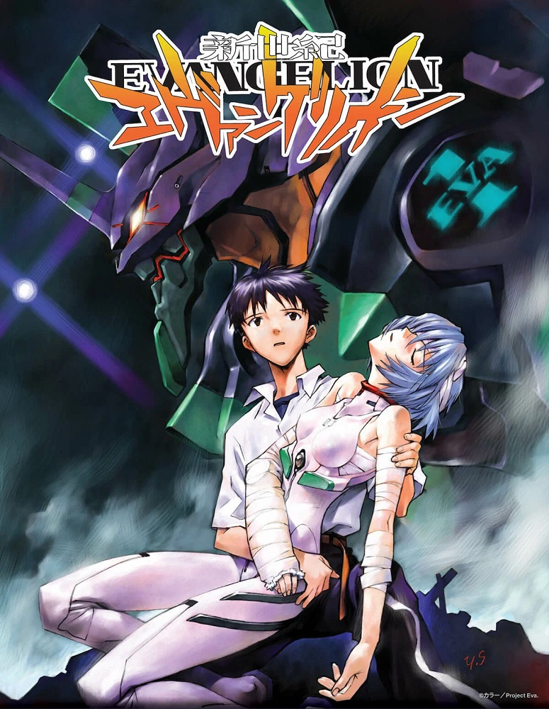

 «Евангелион» (яп. 新世紀エヴァンゲリオン Синсэйки Эвангэрион, букв. «Евангелие нового столетия»
, международное название — Neon Genesis Evangelion), или сокращённо «Ева», — культовый аниме-сериал
в жанре «меха», снятый режиссёром Хидэаки Анно на студии Gainax и выходивший с 4 октября 1995 по 27 марта 1996 года.
Сценарий написан шестью сценаристами. Сопродюсерами сериала выступили TV Tokyo и Nihon Ad Systems (NAS). Впоследствии выходило множество произведений по мотивам франшизы, таких как аниме, игры и манга.
Аниме и манга повествуют о борьбе организации Nerv с таинственными созданиями — «Ангелами», по неизвестным причинам нападающими на человечество.
С целью защиты от вторжения Ангелов используются биороботы «Евангелионы», разработанные предшественницей Nerv — Gehirn. Управлять этими роботами могут только некоторые 14-летние подростки, именуемые «Детьми» или «Дитя»,
когда речь идёт об отдельном пилоте. При этом аниме и манга имеют некоторые расхождения в сюжете. Так, например, в манге появляется лишь 12 Ангелов вместо 17 в сериале, и в первом бою, в отличие от аниме, участвует Рей Аянами на Евангелионе-01